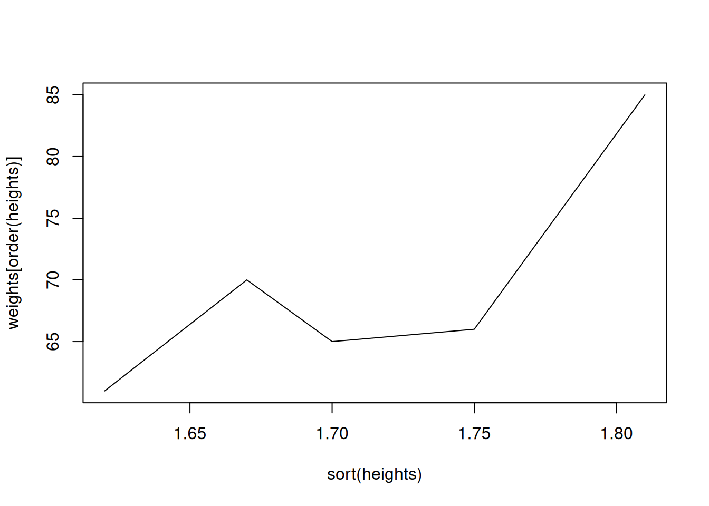

plot(c(1,3,5,4,6))4 Basic plotting
Simple scatter plots
- Scatter plots and line plots are created with the
plotcommand. (Usehelp(plot)for detailed description.) - Simplest use:
plot(y)orplot(x,y).
A plot with separate x and y coordinate vectors
my_x_values <- c(-2, -1.5, 0, 1.7, 2.3)
my_y_values <- c(1,3,5,4,6)
plot(my_x_values, my_y_values)Plotting a mathematical expression
x <- -5:5
y <- x^2
plot(x, y)Change the axis labels and the title
heights <- c(1.70, 1.67, 1.75, 1.62, 1.81)
weights <- c(65, 70, 66, 61, 85)
plot(heights, weights, xlab="height (m)", ylab="weight (kg)")
title("Weight vs. height")
Change the marker shape and color
plot(heights, weights, pch=4, col="red", xlab="height (m)", ylab="weight (kg)")
title("Weight vs. height")For details of setting the marker shape, size, and color see this document: https://www.statmethods.net/advgraphs/parameters.html
Line plots
x <- -5:5
y <- x^2
plot(x,y,type="l")Suppose we plot the weights of people against their heights:
heights <- c(1.70, 1.67, 1.75, 1.62, 1.81)
weights <- c(65, 70, 66, 61, 85)
plot(heights, weights, type="l")Since the data is not ordered, the line plot is zigzagging around. In this particular case, ordering weights with respect to heights produces a more pleasing plot.
plot(sort(heights), weights[order(heights)], type="l")
Function plotting
Plot the function \(y(x) = \mathrm{e}^{-0.1x^2}\sin(x)\).
x <- seq(-10, 10, length.out = 201)
y <- exp(-0.1*x^2)*sin(x)
plot(x, y, type="l", col="darkgreen")
title("A function")Plotting two functions together
Plot the functions \(y_1(x) = \mathrm{e}^{-0.1x^2}\sin(x)\) and \(y_2(x) = \sin(x)\) on the same graph.
x <- seq(-10,10, length.out = 101)
y1 <- exp(-0.1*x^2)*sin(x)
y2 <- sin(x)
plot(x, y1, type="l", col="red")
points(x, y2, type="l", col="blue")
title("Two functions")The y-axis limits are set according to the first plot, so the second plot appears cropped. To fix this, let’s set the limits manually.
plot(x, y1, ylim=c(-1.1, 1.1), type="l", col="red")
points(x, y2, type="l", col="blue")
title("Two functions")Histograms
A histogram divides the range of the data into “bins”, displays the count of points in each bin.
x <- c(rep(17,4), rep(18,7), rep(19,5), rep(20,5), rep(21,4))
# Remember that rep(17,4) gives (17,17,17,17)
x [1] 17 17 17 17 18 18 18 18 18 18 18 19 19 19 19 19 20 20 20 20 20 21 21 21 21hist(x, col="blue")Specify the break points of the histogram:
hist(x, col="red", breaks=15:22)Show the density instead of bin counts:
hist(x, col="skyblue", breaks=15:22, freq=FALSE)The density values of bars sum up to 1.